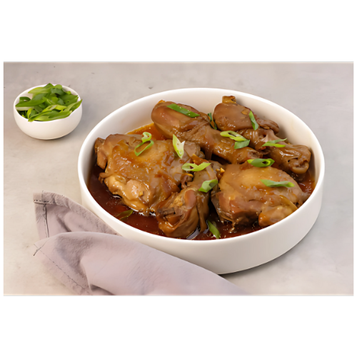

Chicken Adobo
Chicken Adobo is a classic Filipino dish renowned for its savory and tangy flavors. It consists of chicken marinated in a rich blend of soy sauce, vinegar, garlic, bay leaves, and black peppercorns. The marinade tenderizes the meat while infusing it with deep, aromatic flavors.
Traditionally, the chicken is simmered until it's tender and fully absorbs the marinade, resulting in a dish that is both comforting and satisfying. The rich, dark sauce can be poured over steamed rice, creating a perfect harmony of flavors. Each bite offers a delightful balance of salty, tangy, and umami notes that reflects the essence of Filipino cuisine.
Variations of Chicken Adobo exist throughout the Philippines, with some incorporating additional ingredients like potatoes, coconut milk, or hard-boiled eggs. This versatility, combined with its robust flavor profile, has made Chicken Adobo a beloved staple not only in Filipino households but also among food enthusiasts around the world.
Origin
Chicken Adobo is a traditional Filipino dish with origins that reflect the country's rich history and diverse culinary influences. The term "adobo" comes from the Spanish word "adobar," meaning "to marinate." While its roots trace back to pre-colonial times, when indigenous people used vinegar and spices to preserve meat, the arrival of Spanish colonizers in the 16th century introduced new ingredients, particularly soy sauce, which became integral to the dish's marinade.
Over time, Chicken Adobo evolved into various regional adaptations, with different provinces incorporating local ingredients and flavors. Some versions feature coconut milk, potatoes, or hard-boiled eggs, showcasing the dish's versatility. Today, Chicken Adobo is celebrated as the unofficial national dish of the Philippines, symbolizing the blending of indigenous and foreign culinary traditions, and remains a beloved comfort food enjoyed by Filipinos around the world.
Ingredients
For chicken Marinade:
- 1 kg (about 2.2 lbs) chicken pieces (legs, thighs, or a mix)
- 1/2 cup soy sauce
- 1/2 cup vinegar (cane vinegar or white vinegar)
- 1 head garlic, minced (about 10 cloves)
- 3-4 bay leaves
- 1 tsp black peppercorns
- Salt to taste
- 1 tbsp vegetable oil (optional, for sautéing)
- 1 medium onion, sliced (optional)
- Water (as needed to adjust the sauce consistency)
How to Cook
- In a large bowl, combine the chicken pieces, soy sauce, vinegar, minced garlic, bay leaves, black peppercorns, and a pinch of salt. Mix well to ensure the chicken is evenly coated.
- Cover and marinate in the refrigerator for at least 30 minutes to 2 hours (or overnight for better flavor).
- In a large pot or skillet, heat the vegetable oil over medium heat. If using, add the sliced onions and sauté until they are translucent.
- Add the marinated chicken (reserve the marinade) to the pot and cook for about 5-7 minutes, turning occasionally until the chicken is lightly browned.
- Pour in the reserved marinade along with the bay leaves and black peppercorns.
- Bring the mixture to a boil, then reduce the heat to low. Cover and simmer for about 30-40 minutes, or until the chicken is tender and cooked through. Stir occasionally to prevent sticking. If the sauce is too thick, you can add a little water to achieve the desired consistency.
- Taste the sauce and adjust the seasoning with salt as needed. The sauce should have a balanced flavor of salty and tangy notes.
- Once done, remove from heat and let it rest for a few minutes. Serve hot over steamed rice, spooning some sauce over the chicken for added flavor.